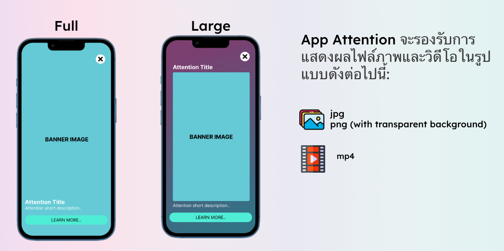

App Attention
App Attention ช่วยแสดงป๊อปอัปโปรโมชันภายในแอป รองรับแบนเนอร์ วิดีโอ และข้อความที่ปรับแต่งได้ เพื่อแนะนำข้อเสนอพิเศษ กระตุ้นการมีส่วนร่วม และนำผู้ใช้ไปยัง URL ที่ต้องการ
รูปแบบการแสดงผล
App Attention มีให้เลือกสองขนาด ได้แก่ Full และ Large โดยเลือกให้เหมาะกับเนื้อหาและการนำเสนอโปรโมชัน

รองรับภาพ JPG, PNG รวมถึง PNG พื้นหลังโปร่งใส และวิดีโอ MP4 ตามรูปแบบในภาพตัวอย่าง
การตั้งค่าใน PAM
ตั้งค่า App Attention ได้จาก PAM Admin Console ที่เมนู Campaign โดย App Attention เป็น Message ประเภทหนึ่งใน Campaign สามารถกำหนดเนื้อหาโปรโมชันและรูปแบบการแสดงผลได้จากส่วนนี้
เรียกแสดง App Attention ในแอป
เรียก Pam.appAttention() ได้จากทุกหน้าที่ต้องการแสดงโปรโมชัน โดยกำหนด pageName ให้ต่างกัน เช่น home, product_detail หรือ cart เพื่อระบุหน้าที่กำลังใช้งาน และใช้ชื่อให้ตรงกับการตั้งค่าใน PAM
import 'package:flutter/material.dart';
import 'package:pam_flutter/pam.dart';
class HomePage extends StatefulWidget {
const HomePage({super.key});
@override
State<HomePage> createState() => _HomePageState();
}
class _HomePageState extends State<HomePage> {
@override
void initState() {
super.initState();
WidgetsBinding.instance.addPostFrameCallback((_) {
if (!mounted) return;
Pam.appAttention(context, pageName: 'home');
});
}
@override
Widget build(BuildContext context) {
return Scaffold(
appBar: AppBar(title: const Text('หน้าหลัก')),
body: const Center(child: Text('ยินดีต้อนรับ')),
);
}
}
สามารถเรียก Pam.appAttention() เพื่อตรวจสอบข้อความที่ต้องแสดงได้ หากไม่มีป๊อปอัปที่เข้าเงื่อนไข ระบบจะไม่แสดงอะไร และแอปทำงานต่อได้ตามปกติ
เรียกเมื่อหน้าแสดงครั้งแรกตามตัวอย่าง ไม่ควรเรียกใน build() เพราะอาจเกิดการเรียกใหม่เมื่อหน้าจออัปเดต
ทั้งแอปแสดง App Attention ได้ทีละหนึ่งอัน ระหว่างโหลดหรือแสดงป๊อปอัป การเรียกซ้ำทุก pageName จะถูกข้ามโดยไม่เก็บคิว เมื่อปิดแล้วต้องเรียก Pam.appAttention() ใหม่จึงจะมีโอกาสแสดงอีกครั้ง ไม่มีการเปิดอันถัดไปอัตโนมัติ หากไม่มีข้อความหรือเกิดข้อผิดพลาดก็สามารถเรียกใหม่ได้ เมธอดคืน Future<void> ให้รอจบงานได้ และจะข้ามผลลัพธ์เก่าหากหน้าไม่อยู่ด้านหน้าหรือ session เปลี่ยนไป
เปลี่ยนข้อความและสี Action Button
หาก API ไม่ส่ง url สำหรับคลิก ส่ง null ข้อความว่าง หรือช่องว่างล้วน SDK จะซ่อน Action Button ทั้ง iOS และ Android แม้กำหนดข้อความปุ่มหรือ onBannerClick ไว้ เนื้อหาป๊อปอัปและปุ่มปิดยังแสดงตามปกติ
กำหนดข้อความ สีพื้นหลัง และสีข้อความของปุ่มจากโค้ดได้ทั้ง Android และ iOS:
Pam.appAttention(
context,
pageName: 'home',
actionButtonLabel: 'ดูข้อเสนอ',
actionButtonColor: '#0066FF',
actionButtonTextColor: '#FFFFFF',
);
สีใช้รูปแบบ #RRGGBB จำนวน 6 หลัก รองรับตัวอักษรพิมพ์เล็กและใหญ่ หากสีไม่ถูกต้องจะใช้สีเดิมของปุ่ม ไม่กำหนดตัวเลือกใดก็ใช้ค่าเดิมได้
ค่าจาก API มีลำดับความสำคัญสูงกว่าค่าจากโค้ด โดยพิจารณาแยกแต่ละฟิลด์: action_button_label, action_button_color และ action_button_text_color หาก API ไม่ส่งฟิลด์นั้น ส่ง null ส่งข้อความว่าง หรือช่องว่างล้วน จะใช้ค่าจากโค้ดแทน หากไม่ได้กำหนดจากโค้ดด้วย จะใช้ค่าเริ่มต้นของปุ่ม
onBannerClick: กำหนดการทำงานเมื่อผู้ใช้คลิกป๊อปอัป
โดยปกติ เมื่อผู้ใช้คลิก App Attention SDK จะอ่าน url ที่กำหนดมากับข้อความและเปิดด้วยแอปภายนอก หากต้องการจัดการเอง เช่น เปิดหน้าสินค้าภายในแอป หรือนำผู้ใช้ไปยังหน้าคูปอง ให้ส่ง callback ผ่านพารามิเตอร์ onBannerClick
Pam.appAttention(
context,
pageName: 'home',
onBannerClick: (bannerData) {
// ตรวจสอบข้อมูลและกำหนดการตอบสนองของแอป
return false;
},
);
ข้อมูล bannerData
callback ได้รับ bannerData ชนิด Map<String, dynamic>? ซึ่งเป็นข้อมูลที่ส่งกลับจากป๊อปอัป สามารถอ่าน bannerData?['url'] เพื่อดู URL ปลายทาง ส่วนข้อมูลอื่นให้ตรวจสอบตามรูปแบบข้อความที่ตั้งค่าร่วมกับทีม PAM
ควรตรวจสอบทั้งกรณีไม่มีข้อมูลและชนิดของค่าก่อนนำไปใช้งาน
ค่าที่ต้องส่งกลับ
| ค่าที่คืน | การทำงานของ SDK |
|---|---|
true |
แอปรับจัดการคลิกเองแล้ว SDK จะไม่เปิด URL ให้อีก |
false |
ให้ SDK ทำงานตามปกติ โดยเปิด url หากมีและสามารถเปิดได้ |
หากไม่กำหนด onBannerClick SDK จะใช้การเปิด URL ตามปกติ callback นี้ต้องคืนค่า bool ทันที ไม่รองรับการประกาศเป็น async
ตัวอย่างเปิดหน้าภายในแอป
ตัวอย่างนี้กำหนดให้ URL myapp://coupon เปิดหน้าคูปองผ่าน route /coupons ส่วน URL อื่นให้ SDK เปิดตามปกติ แอปต้องลงทะเบียน route นี้ใน MaterialApp และเรียกด้วย context ของหน้าที่อยู่ภายใต้ Navigator
Pam.appAttention(
context,
pageName: 'home',
onBannerClick: (bannerData) {
final url = bannerData?['url'];
if (url is! String) {
return false;
}
final uri = Uri.tryParse(url);
if (uri?.scheme == 'myapp' && uri?.host == 'coupon') {
// ป๊อปอัปอาจตอบกลับหลังผู้ใช้ออกจากหน้านี้แล้ว
if (!context.mounted) {
return true;
}
// เปิดหน้าคูปองภายในแอป โดยไม่รอให้ผู้ใช้กลับจากหน้านั้น
Navigator.of(context).pushNamed('/coupons');
// จัดการแล้ว: ป้องกัน SDK เปิด URL ซ้ำด้วยแอปภายนอก
return true;
}
// URL ที่แอปไม่ได้จัดการ ให้ SDK เปิดตามพฤติกรรมปกติ
return false;
},
);
หากต้องเริ่มงาน asynchronous ภายใน callback สามารถเรียกฟังก์ชันแยกให้ทำงานต่อได้ แล้วคืน true ทันทีเมื่อแอปเป็นผู้รับผิดชอบการคลิกนั้น โดยไม่ต้องรอผลใน callback
ตรวจ App Attention จากจุดกลางเมื่อเปลี่ยนหน้า
หากต้องการตรวจทั้งตอนเข้าหน้าใหม่และกลับมาหน้าเดิม ให้ใช้ NavigatorObserver แทนการเรียกซ้ำใน initState() ของแต่ละหน้า ตัวอย่างนี้ใช้กับ MaterialApp / Navigator ที่มีชื่อ route โดยข้าม dialog และ popup ของแอป
ก่อนตรวจ Attention ต้อง initialize PAM และได้รับ contact จาก API แล้ว ซึ่งอาจมาจาก tracking event ใดก็ได้ ไม่จำเป็นต้องผ่าน login หรือ consent โดยเฉพาะ หากยังไม่มี contact SDK จะข้ามการตรวจ Attention ครั้งนั้น
import 'package:flutter/material.dart';
import 'package:pam_flutter/pam.dart';
void checkPamAttentionForPage(
BuildContext context, {
required String pageName,
}) {
if (!context.mounted) return;
Pam.appAttention(context, pageName: pageName);
}
class PamAttentionNavigatorObserver extends NavigatorObserver {
int _pageChangeVersion = 0;
@override
void didPush(Route<dynamic> route, Route<dynamic>? previousRoute) {
// เข้าไปยังหน้าใหม่
_checkCurrentPage(route);
}
@override
void didPop(Route<dynamic> route, Route<dynamic>? previousRoute) {
// กลับมายังหน้าก่อนหน้า: มีโอกาสตรวจ Attention ใหม่อีกครั้ง
// การปิด dialog ไม่ถือเป็นการกลับเข้าหน้าใหม่ในตัวอย่างนี้
if (route is PageRoute) _checkCurrentPage(previousRoute);
}
@override
void didReplace({Route<dynamic>? newRoute, Route<dynamic>? oldRoute}) {
// เปลี่ยนหน้าด้วย pushReplacement เป็นต้น
_checkCurrentPage(newRoute);
}
void _checkCurrentPage(Route<dynamic>? route) {
if (route is! PageRoute) return; // ไม่ตรวจสำหรับ dialog หรือ popup ของแอป
final version = ++_pageChangeVersion;
// รอให้หน้าปัจจุบันสร้างเสร็จก่อน จึงได้ context ของหน้านั้น
WidgetsBinding.instance.addPostFrameCallback((_) {
if (version != _pageChangeVersion || !route.isCurrent) return;
final context = route.subtreeContext;
final routeName = route.settings.name;
if (context == null || !context.mounted || routeName == null) return;
final pageName = routeName == '/'
? 'home'
: routeName.startsWith('/')
? routeName.substring(1)
: routeName;
if (pageName.isEmpty) return;
checkPamAttentionForPage(context, pageName: pageName);
// ไม่มี Attention -> ไม่แสดงอะไร และไม่ขัดจังหวะหน้าปัจจุบัน
// หากมีป๊อปอัปอื่นกำลังโหลด/แสดง SDK จะข้ามรอบนี้ ไม่เก็บคิว
});
}
}
สร้าง observer ครั้งเดียว เช่น เป็น field ของ State ที่สร้าง MaterialApp แล้วลงทะเบียนผ่าน navigatorObservers:
final pamAttentionObserver = PamAttentionNavigatorObserver();
// ภายใน build() ของ State เดียวกัน
return MaterialApp(
navigatorObservers: [pamAttentionObserver],
// กำหนด routes / onGenerateRoute ของแอปตามปกติ
);
ตัวอย่างแปลง / เป็น home และ /products เป็น products ให้ปรับ mapping ให้ตรงกับชื่อหน้าใน PAM หากสร้าง MaterialPageRoute เองต้องกำหนด RouteSettings(name: ...) ด้วย หากใช้ router อื่นหรือสลับ tab โดยไม่เปลี่ยน route ให้เรียก checkPamAttentionForPage() จาก callback ของระบบนั้นแทน
เลือกใช้ observer หรือการเรียกจากหน้าเพียงวิธีเดียวสำหรับหน้าเดียวกัน ระหว่าง Attention โหลดหรือแสดงอยู่ การเรียกใหม่จะถูกข้ามตามพฤติกรรมของ SDK